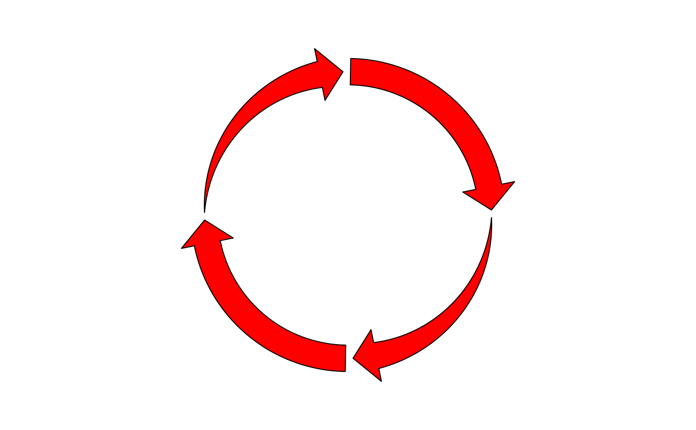
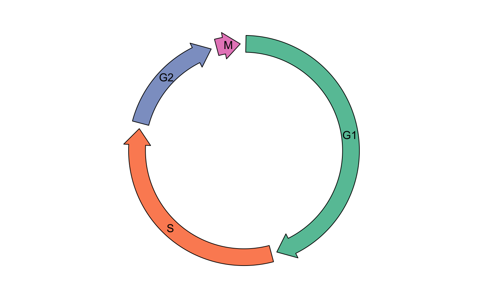

circos.arrow.RdDraw arrow which is paralle to the circle
circos.arrow( x1, x2, y = get.cell.meta.data("ycenter"), width = get.cell.meta.data("yrange")/2, sector.index = get.current.sector.index(), track.index = get.current.track.index(), arrow.head.length = mm_x(5), arrow.head.width = width*2, arrow.position = c("end", "start"), tail = c("normal", "point"), border = "black", col = "white", lty = par("lty"), ...)
| x1 | Start position of the arrow on the x-axis. |
|---|---|
| x2 | End position of the arrow on the x-axis. Note |
| y | Position of the arrow on the y-axis. Note this is the center of the arrow on y-axis. |
| width | Width of the arrow body. |
| sector.index | Index of the sector. |
| track.index | Index of the track. |
| arrow.head.length | Length of the arrow head. Note the value should be smaller than the length of the arrow itself (which is |
| arrow.head.width | Width of the arrow head. |
| arrow.position | Where is the arrow head on the arrow. If you want to the arrow in the reversed direction, set this value to |
| tail | The shape of the arrow tail (the opposite side of arrow head). |
| border | Border color of the arrow. |
| col | Filled color of the arrow. |
| lty | Line style of the arrow. |
| ... | Pass to |
Note all position values are measured in the data coordinate (the coordinate in each cell). For the values of
width, arrow.head.Length, arrow.head.width, they can be set with mm_y/cm_y/inches_y in absolute units.
If you see points overflow warnings, you can set circos.par(points.overflow.warning = FALSE) to turn it off.
op = par(no.readonly = TRUE) par(mfrow = c(1, 2)) circos.initialize(letters[1:4], xlim = c(0, 1)) col = rand_color(4) tail = c("point", "normal", "point", "normal") circos.track(ylim = c(0, 1), panel.fun = function(x, y) { circos.arrow(x1 = 0, x2 = 1, y = 0.5, width = 0.4, arrow.head.width = 0.6, arrow.head.length = cm_x(1), col = col[CELL_META$sector.numeric.index], tail = tail[CELL_META$sector.numeric.index]) }, bg.border = NA, track.height = 0.4) circos.clear() circos.initialize(letters[1:4], xlim = c(0, 1))tail = c("point", "normal", "point", "normal") circos.track(ylim = c(0, 1), panel.fun = function(x, y) { circos.arrow(x1 = 0, x2 = 1, y = 0.5, width = 0.4, arrow.head.width = 0.6, arrow.head.length = cm_x(1), col = col[CELL_META$sector.numeric.index], tail = tail[CELL_META$sector.numeric.index], arrow.position = "start") }, bg.border = NA, track.height = 0.4)par(op) ########## cell cycle ########### cell_cycle = data.frame(phase = factor(c("G1", "S", "G2", "M"), levels = c("G1", "S", "G2", "M")), hour = c(11, 8, 4, 1)) color = c("#66C2A5", "#FC8D62", "#8DA0CB", "#E78AC3") circos.par(start.degree = 90)#> Warning: 'start.degree' can only be modified before `circos.initialize`, or #> maybe you forgot to call `circos.clear` in your last plot.circos.track(ylim = c(0, 1), panel.fun = function(x, y) { circos.arrow(CELL_META$xlim[1], CELL_META$xlim[2], arrow.head.width = CELL_META$yrange*0.8, arrow.head.length = cm_x(1), col = color[CELL_META$sector.numeric.index]) circos.text(CELL_META$xcenter, CELL_META$ycenter, CELL_META$sector.index, facing = "downward") }, bg.border = NA, track.height = 0.3)